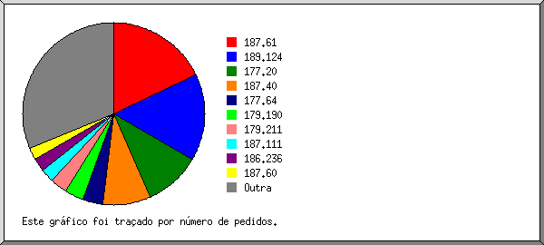
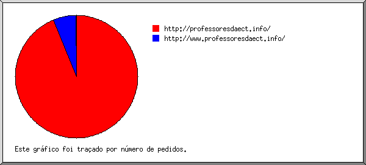
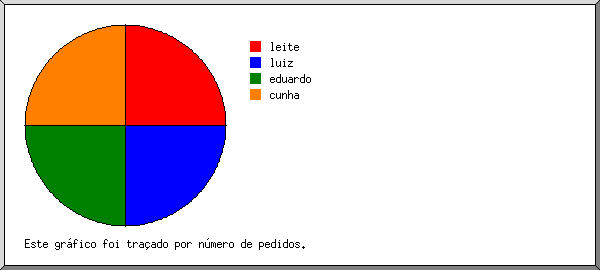
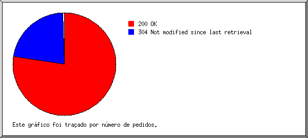
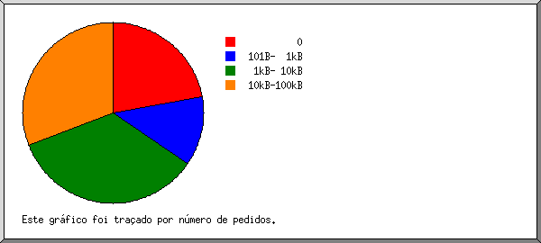
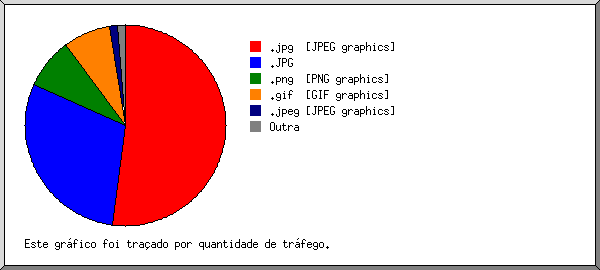
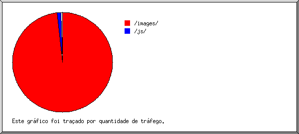
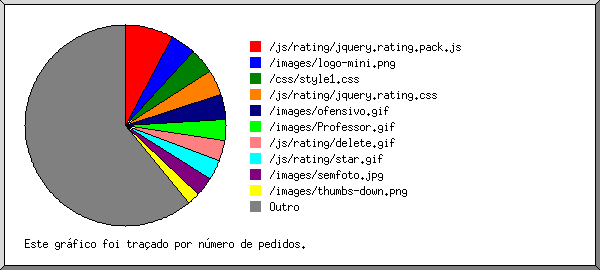

Estatísticas do Servidor Web de professoresdaect.info
Estatísticas do Servidor Web de professoresdaect.info
Começo do programa em Dom-16-Fev-2014 09:31.
Análise de pedidos desde Sex-17-Jan-2014 08:24 até Dom-16-Fev-2014 06:14 (29,91 dias).
Estatísticas do Servidor Web de professoresdaect.infoComeço do programa em Dom-16-Fev-2014 09:31.
Análise de pedidos desde Sex-17-Jan-2014 08:24 até Dom-16-Fev-2014 06:14 (29,91 dias).
(Ir a: Início | Sumário Geral | Relatório Mensal | Resumo Diário | Resumo Horário | Relatório de Domínios | Relatório de organizações | Relatório do sítio de referência | Relatório de pesquisa de palavras | Relatório de Leitores | Resumo de Leitores | Relatório de Sistemas Operativos | Relatório de Códigos de Estado | Relatório de Tamanho de Ficheiro | Relatório de Tipos de Ficheiro | Relatório de Directorias | Relatório de Pedidos)
Os valores entre parêntesis referem-se aos 7 dias até 16-Fev-2014 09:31.
Pedidos atendidos: 134 808 (5 365)
Número médio de pedidos atendidos por dia: 4 507 (766)
Ficheiros diferentes solicitados: 145 (112)
Servidores diferentes atendidos: 2 368 (37)
Tráfego total: 1,30 gigabytes (51,32 megabytes)
Tráfego médio transferido por dia: 44,50 megabytes (7,33 megabytes)
(Ir a: Início | Sumário Geral | Relatório Mensal | Resumo Diário | Resumo Horário | Relatório de Domínios | Relatório de organizações | Relatório do sítio de referência | Relatório de pesquisa de palavras | Relatório de Leitores | Resumo de Leitores | Relatório de Sistemas Operativos | Relatório de Códigos de Estado | Relatório de Tamanho de Ficheiro | Relatório de Tipos de Ficheiro | Relatório de Directorias | Relatório de Pedidos)
Cada unidade ( ) representa 1 pedido de uma página.
) representa 1 pedido de uma página.
| mês | N.ped | Pgs. | |
|---|---|---|---|
| Jan 2014 | 118068 | 0 | |
| Fev 2014 | 16740 | 0 |
Mês mais movimentado: Jan 2014 (0 pedidos de páginas).
(Ir a: Início | Sumário Geral | Relatório Mensal | Resumo Diário | Resumo Horário | Relatório de Domínios | Relatório de organizações | Relatório do sítio de referência | Relatório de pesquisa de palavras | Relatório de Leitores | Resumo de Leitores | Relatório de Sistemas Operativos | Relatório de Códigos de Estado | Relatório de Tamanho de Ficheiro | Relatório de Tipos de Ficheiro | Relatório de Directorias | Relatório de Pedidos)
Cada unidade () representa 1 pedido de uma página.
| dia | N.ped | Pgs. | |
|---|---|---|---|
| Dom | 15517 | 0 | |
| Seg | 29556 | 0 | |
| Ter | 21364 | 0 | |
| Qua | 10934 | 0 | |
| Qui | 9940 | 0 | |
| Sex | 29184 | 0 | |
| Sab | 18313 | 0 |
(Ir a: Início | Sumário Geral | Relatório Mensal | Resumo Diário | Resumo Horário | Relatório de Domínios | Relatório de organizações | Relatório do sítio de referência | Relatório de pesquisa de palavras | Relatório de Leitores | Resumo de Leitores | Relatório de Sistemas Operativos | Relatório de Códigos de Estado | Relatório de Tamanho de Ficheiro | Relatório de Tipos de Ficheiro | Relatório de Directorias | Relatório de Pedidos)
Cada unidade () representa 1 pedido de uma página.
| h | N.ped | Pgs. | |
|---|---|---|---|
| 00 | 9567 | 0 | |
| 01 | 7700 | 0 | |
| 02 | 4441 | 0 | |
| 03 | 1807 | 0 | |
| 04 | 733 | 0 | |
| 05 | 196 | 0 | |
| 06 | 373 | 0 | |
| 07 | 473 | 0 | |
| 08 | 1256 | 0 | |
| 09 | 3283 | 0 | |
| 10 | 4905 | 0 | |
| 11 | 7040 | 0 | |
| 12 | 7420 | 0 | |
| 13 | 7583 | 0 | |
| 14 | 6493 | 0 | |
| 15 | 7670 | 0 | |
| 16 | 7604 | 0 | |
| 17 | 6403 | 0 | |
| 18 | 6773 | 0 | |
| 19 | 6926 | 0 | |
| 20 | 7108 | 0 | |
| 21 | 7967 | 0 | |
| 22 | 9711 | 0 | |
| 23 | 11376 | 0 |
(Ir a: Início | Sumário Geral | Relatório Mensal | Resumo Diário | Resumo Horário | Relatório de Domínios | Relatório de organizações | Relatório do sítio de referência | Relatório de pesquisa de palavras | Relatório de Leitores | Resumo de Leitores | Relatório de Sistemas Operativos | Relatório de Códigos de Estado | Relatório de Tamanho de Ficheiro | Relatório de Tipos de Ficheiro | Relatório de Directorias | Relatório de Pedidos)
Mostrando os domínios, ordenados por quantidade de tráfego.
| N.ped | %bytes | domínio |
|---|---|---|
| 134808 | 100% | [endereço numérico não traduzido] |
(Ir a: Início | Sumário Geral | Relatório Mensal | Resumo Diário | Resumo Horário | Relatório de Domínios | Relatório de organizações | Relatório do sítio de referência | Relatório de pesquisa de palavras | Relatório de Leitores | Resumo de Leitores | Relatório de Sistemas Operativos | Relatório de Códigos de Estado | Relatório de Tamanho de Ficheiro | Relatório de Tipos de Ficheiro | Relatório de Directorias | Relatório de Pedidos)

Mostrando as 20 primeiras organizações por número de pedidos, ordenadas por número de pedidos.
| N.ped | %bytes | organização |
|---|---|---|
| 24260 | 17,49% | 187.61 |
| 20700 | 15,21% | 189.124 |
| 13450 | 10,39% | 177.20 |
| 11495 | 9,07% | 187.40 |
| 4832 | 3,62% | 177.64 |
| 4416 | 3,56% | 179.190 |
| 4274 | 2,86% | 179.211 |
| 3146 | 2,37% | 187.111 |
| 3129 | 2,41% | 186.236 |
| 3034 | 2,41% | 187.60 |
| 2884 | 1,88% | 177.195 |
| 2857 | 1,88% | 177.65 |
| 2695 | 2,35% | 186.208 |
| 2686 | 1,68% | 177.193 |
| 2607 | 1,46% | 177.207 |
| 1858 | 1,44% | 177.135 |
| 1766 | 1,40% | 179.156 |
| 1512 | 1,11% | 201.9 |
| 1296 | 0,94% | 189.70 |
| 1235 | 0,96% | 187.123 |
| 20676 | 15,51% | [não listadas: 193 organizações] |
(Ir a: Início | Sumário Geral | Relatório Mensal | Resumo Diário | Resumo Horário | Relatório de Domínios | Relatório de organizações | Relatório do sítio de referência | Relatório de pesquisa de palavras | Relatório de Leitores | Resumo de Leitores | Relatório de Sistemas Operativos | Relatório de Códigos de Estado | Relatório de Tamanho de Ficheiro | Relatório de Tipos de Ficheiro | Relatório de Directorias | Relatório de Pedidos)

Mostrando os sítios de referência, ordenados por número de pedidos.
| N.ped | sítio |
|---|---|
| 125277 | http://professoresdaect.info/ |
| 8178 | http://www.professoresdaect.info/ |
| 19 | https://www.google.com.br/ |
| 2 | http://www.google.com.br/ |
| 1 | fbapp://350685531728/ |
(Ir a: Início | Sumário Geral | Relatório Mensal | Resumo Diário | Resumo Horário | Relatório de Domínios | Relatório de organizações | Relatório do sítio de referência | Relatório de pesquisa de palavras | Relatório de Leitores | Resumo de Leitores | Relatório de Sistemas Operativos | Relatório de Códigos de Estado | Relatório de Tamanho de Ficheiro | Relatório de Tipos de Ficheiro | Relatório de Directorias | Relatório de Pedidos)

Mostrando as palavras pesquisadas, ordenadas por número de pedidos.
| N.ped | termo pesquisado |
|---|---|
| 1 | leite |
| 1 | luiz |
| 1 | eduardo |
| 1 | cunha |
(Ir a: Início | Sumário Geral | Relatório Mensal | Resumo Diário | Resumo Horário | Relatório de Domínios | Relatório de organizações | Relatório do sítio de referência | Relatório de pesquisa de palavras | Relatório de Leitores | Resumo de Leitores | Relatório de Sistemas Operativos | Relatório de Códigos de Estado | Relatório de Tamanho de Ficheiro | Relatório de Tipos de Ficheiro | Relatório de Directorias | Relatório de Pedidos)
Mostrando os leitores com pelo menos 1 pedido de uma página, ordenados por número de pedidos de páginas.
| N.ped | Pgs. | Leitor |
|---|---|---|
| 134695 | 0 | [não listados: 455 Leitores] |
(Ir a: Início | Sumário Geral | Relatório Mensal | Resumo Diário | Resumo Horário | Relatório de Domínios | Relatório de organizações | Relatório do sítio de referência | Relatório de pesquisa de palavras | Relatório de Leitores | Resumo de Leitores | Relatório de Sistemas Operativos | Relatório de Códigos de Estado | Relatório de Tamanho de Ficheiro | Relatório de Tipos de Ficheiro | Relatório de Directorias | Relatório de Pedidos)
Mostrando os leitores com pelo menos 1 pedido de uma página, ordenados por número de pedidos de páginas.
| no. | N.ped | Pgs. | Leitor |
|---|---|---|---|
| 134695 | 0 | [não listados: 15 Leitores] |
(Ir a: Início | Sumário Geral | Relatório Mensal | Resumo Diário | Resumo Horário | Relatório de Domínios | Relatório de organizações | Relatório do sítio de referência | Relatório de pesquisa de palavras | Relatório de Leitores | Resumo de Leitores | Relatório de Sistemas Operativos | Relatório de Códigos de Estado | Relatório de Tamanho de Ficheiro | Relatório de Tipos de Ficheiro | Relatório de Directorias | Relatório de Pedidos)
Mostrando os Sistemas Operativos, ordenados por número de pedidos de páginas.
| no. | N.ped | Pgs. | Sistema Operativo |
|---|---|---|---|
| 1 | 89 | 0 | Robôs |
| 2 | 2598 | 0 | Sistema Operativo desconhecido |
| 3 | 110544 | 0 | Windows |
| 6 | 0 | Windows NT | |
| 20 | 0 | Windows Server 2003 | |
| 5139 | 0 | Windows XP | |
| 105379 | 0 | Windows desconhecido | |
| 4 | 14330 | 0 | Unix |
| 14330 | 0 | Linux | |
| 5 | 700 | 0 | Symbian OS |
| 6 | 6434 | 0 | Macintosh |
(Ir a: Início | Sumário Geral | Relatório Mensal | Resumo Diário | Resumo Horário | Relatório de Domínios | Relatório de organizações | Relatório do sítio de referência | Relatório de pesquisa de palavras | Relatório de Leitores | Resumo de Leitores | Relatório de Sistemas Operativos | Relatório de Códigos de Estado | Relatório de Tamanho de Ficheiro | Relatório de Tipos de Ficheiro | Relatório de Directorias | Relatório de Pedidos)

Mostrando os códigos de estado, por ordem numérica.
| N.ped | cod. estado |
|---|---|
| 104272 | 200 OK |
| 578 | 206 Partial content |
| 29958 | 304 Not modified since last retrieval |
(Ir a: Início | Sumário Geral | Relatório Mensal | Resumo Diário | Resumo Horário | Relatório de Domínios | Relatório de organizações | Relatório do sítio de referência | Relatório de pesquisa de palavras | Relatório de Leitores | Resumo de Leitores | Relatório de Sistemas Operativos | Relatório de Códigos de Estado | Relatório de Tamanho de Ficheiro | Relatório de Tipos de Ficheiro | Relatório de Directorias | Relatório de Pedidos)

| tamanho | N.ped | %bytes |
|---|---|---|
| 0 | 29959 | |
| 1B- 10B | 0 | |
| 11B- 100B | 0 | |
| 101B- 1kB | 16754 | 0,99% |
| 1kB- 10kB | 46415 | 9,45% |
| 10kB-100kB | 41680 | 89,56% |
(Ir a: Início | Sumário Geral | Relatório Mensal | Resumo Diário | Resumo Horário | Relatório de Domínios | Relatório de organizações | Relatório do sítio de referência | Relatório de pesquisa de palavras | Relatório de Leitores | Resumo de Leitores | Relatório de Sistemas Operativos | Relatório de Códigos de Estado | Relatório de Tamanho de Ficheiro | Relatório de Tipos de Ficheiro | Relatório de Directorias | Relatório de Pedidos)

Mostrando as extensões com pelo menos 0,1% do tráfego, ordenadas por quantidade de tráfego.
| N.ped | %bytes | extensão |
|---|---|---|
| 58883 | 52,01% | .jpg [JPEG graphics] |
| 15528 | 29,62% | .JPG |
| 14951 | 8,23% | .png [PNG graphics] |
| 23119 | 7,65% | .gif [GIF graphics] |
| 731 | 1,35% | .jpeg [JPEG graphics] |
| 10596 | 0,62% | .js [JavaScript code] |
| 11000 | 0,52% | .css [Cascading Style Sheets] |
(Ir a: Início | Sumário Geral | Relatório Mensal | Resumo Diário | Resumo Horário | Relatório de Domínios | Relatório de organizações | Relatório do sítio de referência | Relatório de pesquisa de palavras | Relatório de Leitores | Resumo de Leitores | Relatório de Sistemas Operativos | Relatório de Códigos de Estado | Relatório de Tamanho de Ficheiro | Relatório de Tipos de Ficheiro | Relatório de Directorias | Relatório de Pedidos)

Mostrando as directorias com pelo menos 0,01% do tráfego, ordenadas por quantidade de tráfego.
| N.ped | %bytes | directoria |
|---|---|---|
| 102978 | 98,37% | /images/ |
| 24820 | 1,15% | /js/ |
| 6948 | 0,44% | /css/ |
| 62 | 0,03% | /assets/ |
(Ir a: Início | Sumário Geral | Relatório Mensal | Resumo Diário | Resumo Horário | Relatório de Domínios | Relatório de organizações | Relatório do sítio de referência | Relatório de pesquisa de palavras | Relatório de Leitores | Resumo de Leitores | Relatório de Sistemas Operativos | Relatório de Códigos de Estado | Relatório de Tamanho de Ficheiro | Relatório de Tipos de Ficheiro | Relatório de Directorias | Relatório de Pedidos)

Mostrando os ficheiros com pelo menos 20 pedidos, ordenados por número de pedidos.
| N.ped | %bytes | hora ant. | ficheiro |
|---|---|---|---|
| 10560 | 0,59% | 16/Fev/14 06:14 | /js/rating/jquery.rating.pack.js |
| 5556 | 1,88% | 16/Fev/14 06:14 | /images/logo-mini.png |
| 5522 | 0,31% | 16/Fev/14 06:13 | /css/style1.css |
| 5454 | 0,21% | 16/Fev/14 06:13 | /js/rating/jquery.rating.css |
| 5398 | 0,23% | 16/Fev/14 06:14 | /images/ofensivo.gif |
| 4606 | 3,20% | 16/Fev/14 06:13 | /images/Professor.gif |
| 4409 | 0,17% | 16/Fev/14 06:14 | /js/rating/delete.gif |
| 4397 | 0,18% | 16/Fev/14 06:14 | /js/rating/star.gif |
| 4125 | 0,43% | 16/Fev/14 02:12 | /images/semfoto.jpg |
| 2642 | 0,10% | 16/Fev/14 06:14 | /images/thumbs-down.png |
| 2598 | 0,10% | 16/Fev/14 06:14 | /images/thumbs-up.png |
| 1097 | 1,77% | 15/Fev/14 22:10 | /images/professores/FACE.JPG |
| 1000 | 0,10% | 16/Fev/14 01:12 | /css/error.png |
| 982 | 0,26% | 14/Fev/14 22:17 | /images/professores/Eu3.JPG |
| 972 | 0,09% | 16/Fev/14 02:15 | /images/professores/simone.jpg |
| 909 | 0,10% | 15/Fev/14 21:20 | /images/professores/jossana.jpg |
| 897 | 0,09% | 16/Fev/14 06:13 | /images/professores/ronai.jpg |
| 894 | 2,22% | 15/Fev/14 12:29 | /images/professores/Fabiana 1.jpg |
| 887 | 1,01% | 16/Fev/14 02:13 | /images/professores/RaquelSampaio.jpg |
| 886 | 1,77% | 15/Fev/14 22:07 | /images/professores/SDC13808.JPG |
| 885 | 1,96% | 16/Fev/14 06:13 | /images/professores/DSC01609.JPG |
| 879 | 2,05% | 15/Fev/14 21:25 | /images/professores/daniel.JPG |
| 878 | 0,10% | 15/Fev/14 22:33 | /images/professores/ashdaksdimages.jpg |
| 877 | 0,09% | 15/Fev/14 21:23 | /images/professores/boansodnasd.jpg |
| 865 | 0,10% | 16/Fev/14 01:12 | /images/professores/darlan.jpg |
| 863 | 0,11% | 16/Fev/14 06:13 | /images/professores/josehenr.jpg |
| 860 | 0,13% | 16/Fev/14 02:13 | /images/professores/manoel.jpg |
| 859 | 0,06% | 15/Fev/14 22:06 | /images/professores/sesion.jpg |
| 854 | 0,11% | 15/Fev/14 21:21 | /images/professores/bessa.jpg |
| 854 | 0,07% | 16/Fev/14 01:12 | /images/professores/aasdoaspodaksd.jpg |
| 852 | 1,96% | 16/Fev/14 00:26 | /images/professores/keka.jpg |
| 847 | 0,12% | 15/Fev/14 22:10 | /images/professores/leo.jpg |
| 843 | 0,10% | 15/Fev/14 22:09 | /images/professores/182736123.jpg |
| 831 | 1,49% | 16/Fev/14 02:15 | /images/professores/zzzz.jpg |
| 827 | 0,09% | 15/Fev/14 21:25 | /images/professores/877798.jpg |
| 827 | 0,08% | 15/Fev/14 17:55 | /images/professores/deihadpsoaijdasd.jpg |
| 826 | 0,10% | 15/Fev/14 23:34 | /images/professores/asldkajsldkas.jpg |
| 822 | 1,81% | 16/Fev/14 01:12 | /images/professores/rosto.gif |
| 812 | 0,10% | 15/Fev/14 19:21 | /images/professores/leandro.jpg |
| 810 | 0,49% | 15/Fev/14 22:06 | /images/professores/New_DSC_0798.jpg |
| 801 | 0,07% | 15/Fev/14 22:06 | /images/professores/jos.jpg |
| 800 | 1,26% | 15/Fev/14 21:19 | /images/professores/pkg_util_img.jpg |
| 793 | 2,03% | 15/Fev/14 23:23 | /images/professores/P18-11-12_08.29.jpg |
| 792 | 0,45% | 15/Fev/14 22:06 | /images/professores/aquiles.jpg |
| 791 | 2,08% | 15/Fev/14 17:41 | /images/professores/MyPicture-1-1-1-1-1.jpg |
| 790 | 0,08% | 15/Fev/14 23:21 | /images/professores/igor.jpg |
| 789 | 0,31% | 15/Fev/14 23:20 | /images/professores/josinaldo.jpg |
| 779 | 1,72% | 16/Fev/14 00:25 | /images/professores/ricardowa.jpg |
| 779 | 0,09% | 16/Fev/14 02:13 | /images/professores/jazz.jpg |
| 777 | 0,70% | 15/Fev/14 22:06 | /images/professores/1376396_423456877754211_1095478452_n.jpg |
| 777 | 0,09% | 15/Fev/14 22:07 | /images/professores/aksjdhaslkdjsimages.jpg |
| 774 | 1,92% | 16/Fev/14 02:14 | /images/professores/sigaa2.JPG |
| 770 | 1,53% | 16/Fev/14 02:15 | /images/professores/SAM_0037.JPG |
| 769 | 0,10% | 15/Fev/14 21:18 | /images/professores/marcela.jpg |
| 768 | 1,75% | 16/Fev/14 00:25 | /images/professores/fotosigaa.png |
| 767 | 1,62% | 15/Fev/14 21:20 | /images/professores/jp.jpg |
| 767 | 1,73% | 15/Fev/14 21:23 | /images/professores/ada.png |
| 765 | 1,22% | 15/Fev/14 21:19 | /images/professores/Einstein_G.S..jpg |
| 765 | 1,08% | 16/Fev/14 02:13 | /images/professores/DSC_1712.JPG |
| 764 | 1,79% | 15/Fev/14 12:29 | /images/professores/C-UsersgzslPicturesGustavo Zampier.jpg |
| 749 | 0,57% | 14/Fev/14 22:18 | /images/professores/servletrecuperafoto.gif |
| 746 | 0,13% | 15/Fev/14 21:18 | /images/professores/alexandre-strapacao-guedes-vianna.jpg |
| 746 | 0,09% | 15/Fev/14 15:02 | /images/professores/123123images.jpg |
| 745 | 0,07% | 15/Fev/14 22:07 | /images/professores/rumm.jpg |
| 739 | 0,26% | 15/Fev/14 02:29 | /images/professores/DSC05717b_big.JPG |
| 737 | 1,83% | 15/Fev/14 21:18 | /images/professores/DSC00162.JPG |
| 737 | 1,80% | 15/Fev/14 11:45 | /images/professores/100_1580.jpg |
| 735 | 1,73% | 15/Fev/14 22:06 | /images/professores/DSC01272.JPG |
| 734 | 0,08% | 16/Fev/14 06:14 | /images/professores/luciana.jpg |
| 732 | 1,69% | 16/Fev/14 00:25 | /images/professores/DSC03523.JPG |
| 731 | 1,35% | 15/Fev/14 11:29 | /images/professores/foto.jpeg |
| 730 | 1,32% | 15/Fev/14 22:33 | /images/professores/F-ROMERITO 2imagensFOTO - ROMERITO.jpg |
| 721 | 0,08% | 16/Fev/14 01:12 | /images/professores/lucio.jpg |
| 721 | 0,15% | 16/Fev/14 02:15 | /images/professores/carlos-alexandre-camargo-de-abreu.jpg |
| 720 | 1,43% | 15/Fev/14 02:33 | /images/professores/Foto123as.jpg |
| 720 | 1,55% | 15/Fev/14 21:22 | /images/professores/Snapshot_20110927_3.JPG |
| 719 | 0,09% | 15/Fev/14 21:22 | /images/professores/veralucia.jpg |
| 719 | 1,38% | 15/Fev/14 02:29 | /images/professores/DSC05112.JPG |
| 713 | 0,31% | 15/Fev/14 22:06 | /images/professores/servletrecuperafoto (4).gif |
| 701 | 1,60% | 15/Fev/14 23:52 | /images/professores/perfil_lauro_jun_2011.jpg |
| 697 | 1,67% | 15/Fev/14 21:19 | /images/professores/face perfil recorte baile.jpg |
| 695 | 1,73% | 15/Fev/14 11:11 | /images/professores/marcelo.jpg |
| 694 | 1,64% | 15/Fev/14 21:29 | /images/professores/2013-09-06 08.23.53.jpg |
| 693 | 0,08% | 15/Fev/14 21:19 | /images/professores/zul.jpg |
| 692 | 1,57% | 16/Fev/14 06:13 | /images/professores/michel.png |
| 692 | 0,15% | 15/Fev/14 01:44 | /images/professores/rosane_rodrigues_chaves.jpg |
| 687 | 1,59% | 15/Fev/14 23:23 | /images/professores/curriculo.JPG |
| 687 | 1,05% | 16/Fev/14 01:12 | /images/professores/001.jpg |
| 685 | 0,59% | 16/Fev/14 02:13 | /images/professores/servletrecuperafoto (1).gif |
| 683 | 0,47% | 15/Fev/14 22:07 | /images/professores/servletrecuperafoto (3).gif |
| 682 | 0,10% | 15/Fev/14 22:06 | /images/professores/8798123.jpg |
| 681 | 1,49% | 16/Fev/14 00:25 | /images/professores/david_foto.jpg |
| 681 | 1,41% | 16/Fev/14 06:13 | /images/professores/Muro (1).JPG |
| 677 | 0,08% | 16/Fev/14 06:13 | /images/professores/allan.jpg |
| 677 | 1,26% | 15/Fev/14 23:52 | /images/professores/sigaa.jpg |
| 673 | 1,59% | 15/Fev/14 21:19 | /images/professores/IMG_20110709_210606.jpg |
| 669 | 1,09% | 15/Fev/14 22:06 | /images/professores/fomatura.JPG |
| 667 | 1,52% | 16/Fev/14 02:15 | /images/professores/sergio1.jpg |
| 667 | 1,04% | 15/Fev/14 21:19 | /images/professores/Foto 3X4.jpg |
| 667 | 0,07% | 14/Fev/14 21:10 | /images/professores/judith.jpg |
| 667 | 1,33% | 16/Fev/14 06:13 | /images/professores/pycampus.jpg |
| 662 | 0,08% | 15/Fev/14 17:54 | /images/professores/rex.jpg |
| 661 | 0,07% | 16/Fev/14 00:25 | /images/professores/lllllkl.jpg |
| 656 | 1,51% | 15/Fev/14 22:06 | /images/professores/Eu.jpg |
| 655 | 0,13% | 16/Fev/14 06:13 | /images/professores/servletrecuperafoto (2).gif |
| 648 | 1,49% | 16/Fev/14 06:13 | /images/professores/DSC00018.JPG |
| 643 | 1,41% | 16/Fev/14 06:13 | /images/professores/2265_48245809909_4039_n.jpg |
| 631 | 0,14% | 15/Fev/14 23:52 | /images/professores/formatura.jpg |
| 595 | 1,19% | 16/Fev/14 06:13 | /images/professores/556221_10200110016664804_623432796_n.jpg |
| 532 | 1,08% | 16/Fev/14 06:13 | /images/professores/neto.jpg |
| 511 | 1,13% | 15/Fev/14 23:52 | /images/professores/sigaaasd12u3y.JPG |
| 502 | 0,26% | 16/Fev/14 06:13 | /images/professores/1555432_412501972185755_1101264792_n.jpg |
| 500 | 0,96% | 15/Fev/14 22:07 | /images/professores/perfil3.png |
| 480 | 0,98% | 15/Fev/14 12:29 | /images/professores/C-UsersTHIAGO BRUNODesktopfotosZ99bxf1[1].jpg |
| 469 | 1,09% | 15/Fev/14 21:21 | /images/professores/Perfil Sigaa.JPG |
| 459 | 0,77% | 15/Fev/14 19:21 | /images/professores/carlos.jpg |
| 443 | 1,04% | 15/Fev/14 22:33 | /images/professores/foto p a biodata.JPG |
| 426 | 0,04% | 15/Fev/14 22:09 | /css/success.png |
| 24 | 17/Jan/14 15:29 | /images/professores/ada.jpg | |
| 64 | 0,03% | 10/Fev/14 23:07 | [não listados: 8 ficheiros] |